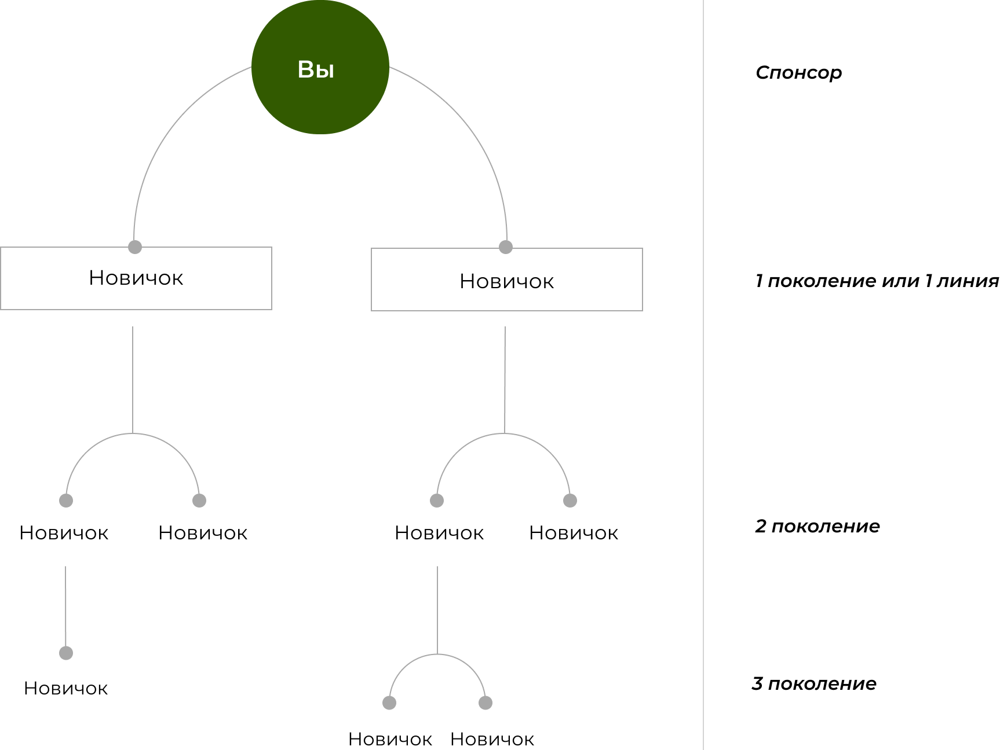

Подготовительный 0 класс Академии One Shop World по Системе Развития Бизнеса и Обучения (СИРБИО)
Учебный материал подготовлен Вице-президентом компании One Shop World Солошенко Владимиром.
0 класс дается бесплатно. Следующие 10 классов платные. Входят в пакет 10 классов СИРБИО.
Все, кто заходят на директорские школы, вам 10 классов СИРБИО оплачивать не надо. Они входят в Вашу программу подготовки.
Внимательно изучите этот материал. Там для вас очень полезная и важная информация.
Работа и забота спонсора
Необходимо понять, что такое спонсирование.
Спонсирование - приглашение человека для совместной работы, с целью вместе заработать денег, и обучение его до такого уровня, при котором он научится самостоятельно строить свой бизнес. Еще спонсирование называют рекрутированием. Рекрутирование – это старое русское слово обозначает «приглашение человека для работы». Что по смыслу одно и то же.
Когда Вы кого-то спонсируете, то это значит, что Вы обучаете его, как и что делать. Вы обучаете его тому, как ему самостоятельно построить свой бизнес.
Слово «спонсирование» означает обучение людей, оказание им помощи и поддержки в том, чтобы они смогли научиться зарабатывать деньги и строить свой бизнес. Существует большая разница, спонсируете Вы человека или помогаете ему заполнить договор. При спонсировании Вы возлагаете на себя ответственность за успешную работу своего партнера. Не помогая ему, Вы наносите вред тем, что только лишь привлекли человека в свой бизнес и бросили его, так ничему и, не научив, в надежде, что он «всплывет» сам. Я хочу Вам открыть маленький секрет. Он не всплывет. И знаете почему? Потому что он не знает, куда и как «всплывать». Вам следует помочь своему новому партнеру создать собственный бизнес. Ответственность спонсора заключается в обучении партнеров всему, что он знает о бизнесе сам. Если Вы пока знаете не много, это не страшно. Вы же учитесь, а значит, постепенно будете знать свою работу лучше и лучше. Только не надо учить человека всему сразу, что Вы знаете сами, особенно, если Вы работаете уже несколько месяцев или лет.
Человека надо учить постепенно, двигаясь от простого к сложному. Намного эффективнее заниматься с человеком индивидуально. Результаты обучения у одного и того же человека при индивидуальной работе всегда будет лучше, чем в группе.
Чему надо учить человека? Своего партнера надо обучать тому, что ему прямо сейчас поможет в заработать денег. Если знания, которые Вы ему даете сейчас, ему не пригодятся в ближайшую неделю, и он может без этого обойтись, не рассказывайте ему об этом. Знания, которые он получит сегодня, должны быть применимы прямо завтра и сразу дать доход. Это важно. Спонсирование – это действие, позволяющее Вашему делу стать крупным и очень успешным. После того, как у Вас начнет расти отдел, Вы автоматически превратитесь в независимого и успешного бизнесмена или бизнес-леди.
Бизнес, в котором Вы работаете, позволяет заработать много денег. Очень много. И действительно быть обеспеченным и богатым человеком.
На самом деле этот бизнес не очень сложный, но в нем надо разобраться и все хорошенечко изучить сразу. Дальше работать точно по системе, добиваясь повторения Ваших действий Вашими младшими партнерами. Прибыль всегда зависит от размера команды партнеров и от того, как они обучаются и повторяют Ваши действия. Правило «Делай, как я говорю» в команде, к сожалению, не работает. Очень хорошо работает другое правило: «Смотри на меня и делай как я».
Самый простой способ понять причину, по которой партнеры чего-то не делают, это задать себе вопрос: «А они видели, как я это делал?» или «Я их этому хорошо обучил?», или «А я это делаю?». И все Вам станет понятно. Это просто волшебство какое-то, но Ваши партнеры стараются копировать своего лидера во всем, а особенно, мгновенно принимают любые отрицательные вещи. Надо пригласить своего партнера и реально показать на личном примере, как выполняется та или иная работа. Будьте позитивны и профессиональны. Только хороший настрой. Как хотите себя заставляйте. Но настрой должен быть только позитивный и оптимистичный.
Постепенно Вы убедитесь в том, что можно заработать много денег. Многие люди начинают работать, в надежде заработать 3 000-5 000 рублей. Затем неожиданно для себя видят, что при правильном и профессиональном отношении к делу можно заработать 20 000 – 50 000 рублей и больше. От чего это зависит? От размера Вашего отдела. В этом курсе мы с Вами изучим, как это делается. В этом бизнесе все начинают с простых действий. Постепенно команда из партнеров увеличивается. Новички задают одни и те же или похожие вопросы. Вы занимаетесь все больше ответами на их вопросы. Больше становится офисной работы. Если Вы чего-то не знаете, это не страшно. Всегда есть более опытный лидер, и он Вам сможет помочь.
После того, как Вы освоите эту работу, то эта работа будет занимать все меньше и меньше времени, а доход будет постоянно увеличиваться. Через несколько недель Вы начнете заниматься помощью в работе подрастающим лидерам и новичкам. В основном эта работа сводится к тому, чтобы действия в группе были понятные и согласованные. Составление расписания встреч спонсоров с новичками. Контроль за посещением новичками всех встреч и занятий. Очень важно следить, чтобы новички не «шарахались» без внимания, а ими занимался человек, который их пригласил, или вышестоящий спонсор.
Постепенно Вы передаете свой опыт своим младшим партнерам. Они зарабатывают больше и больше, а это делает Ваш бизнес очень надежным и доходным. Чем больше зарабатывают Ваши нижестоящие партнеры, тем Вам от этого выгоднее. Им надо помогать.
Позже Вы узнаете, чем надо будет заниматься, когда группа начинает расти и увеличиваться, но в основном Ваша работа будет в том, чтобы приглашать людей и обучать свою команду самостоятельно строить свой бизнес.
Создание собственного бизнеса заключается именно в том, чтобы пригласить людей, которые заинтересованы в хорошем растущем доходе, и обучить их как создать структуры, по которым будет двигаться информация о компании One Shop World от человека к человеку.
Как растет организация
Вам надо понять, каким способом можно построить собственную структуру, состоящую из нескольких сотен человек. Стало страшно от количества людей?
Не волнуйтесь. Просто поймите, как это работает, и начните выполнять.
1 поколение или 1 линия, это люди, которых приглашаете лично Вы. Они приглашают своих новичков. Это партнеры уже их первой линии, а для Вас это вторая линия.
Это можно сравнить с семьей. Вы, это родитель. Вы спонсор. У вас есть дети. Дети, это первое поколение или первая линия. Внуки, это вторая линия и так дальше.
Давайте посмотрим на рисунок.

Давайте немножечко посчитаем.
Предположим, что Вы пригласили в бизнес 2 человека.
Ваши младшие партнеры начали Вас повторять и тоже решили приглашать по два человека.
Вы пригласили двух человек. Эти двое приглашенных новичков каждый пригласили по 2 человека. 2 х 2 = 4. Таким образом, в вашей структуре стало на 4 человека больше. А когда каждый из них привлечет еще по два человека, то получается 8.
Далее все приглашают по 2 человека.
Получается таблица:
| Привлечение новых участников | Общее число участников |
|---|---|
| 2 x 2 = 4 x 2 = 8 x 2 = 16 | 2 x 2 = 4 x 2 = 8 x 2 = 16 |
Упражнение
Возьмите лист бумаги и нарисуйте рост своей команды, как растет ваша струкура если Вы строите его до 4 линии. Каждый приглашает по 2 человека. Вы пригласите двух человек и Ваши партнеры Вас повторяют. Посчитайте количество участников на каждой линии, и какое получилось общее количество участников в Вашем отделе?
Каждого своего партнера нарисуйте кружочком. Соединяйте линией с теми, кто, кого пригласил, так чтобы это было понятно, как на моем рисунке. Я нарисовал построение 1 уровня. Далее продолжите рисунок до 4 уровня и посчитайте людей.
Следующий пример:
Вы пригласили больше на одного человека. Не 2 человека, а три.
Посмотрите, как меняется количество людей в Вашем отделе, если все приглашают только на одного человека больше. Вы пригласили трех. Они каждый по 3 человека.
3 х 3 = 9. Далее все приглашают по 3 человека.
Получается таблица:
| Привлечение новых участников | Общее число участников |
|---|---|
| 3 х 3 = 9 | 2 x 2 = 4 x 2 = 8 x 2 = 16 |